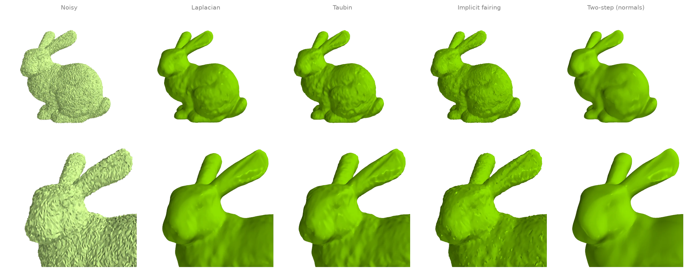
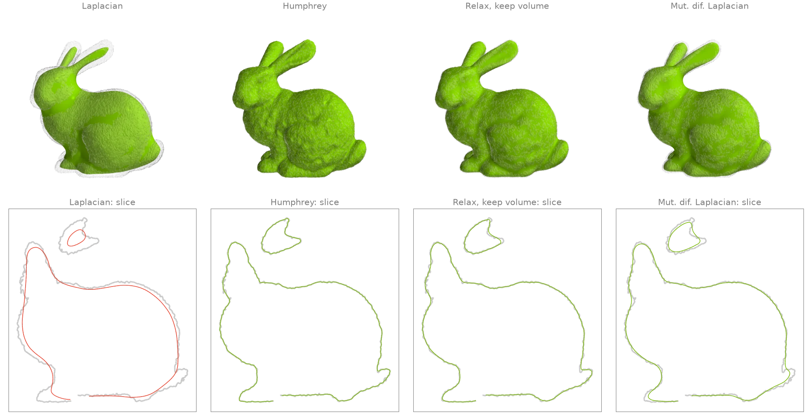
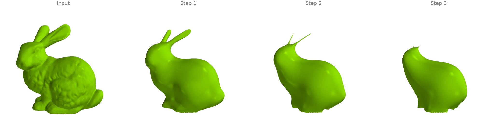
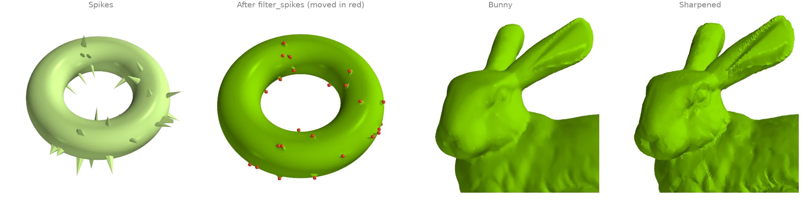
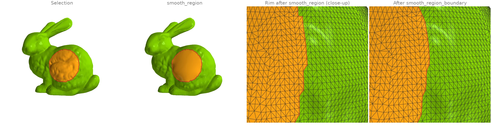
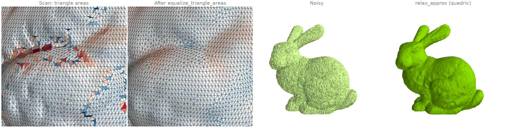

Smoothing and fairing
Denoising filters, shrink-free smoothing, curvature flow, and local fairing of a selected region.
Denoising a scan: four smoothing filters
The bunny with Gaussian noise along its normals, cleaned four ways:
filter_laplacianmoves every vertex towards the mean of its neighbours (here rescaled after each pass to keep the volume); a few passes remove noise, more start to erase detail;filter_taubinalternates a shrinking and an inflating step, which removes noise with far less shrinkage;filter_implicit_fairingtakes one implicit step of cotangent curvature flow;filter_two_stepfirst smooths the face normals withfilter_normalsand then moves the vertices to fit them, which keeps sharp features.
The printed number is the mean distance of each result's vertices from the clean scan.
import numpy as np
import ordito as od
from examples import data
vertices, faces = data.load("noisy_bunny", device)
smoothed = {
"Laplacian": od.smoothing.filter_laplacian(vertices, faces, iterations=5),
"Taubin": od.smoothing.filter_taubin(vertices, faces, iterations=20),
"Implicit fairing": od.smoothing.filter_implicit_fairing(
vertices, faces, lamb=1e-6, iterations=1
),
"Two-step (normals)": od.smoothing.filter_two_step(vertices, faces),
}
clean = data.load("bunny", device)[0].numpy()
print(f"{'noisy':>18}: {np.linalg.norm(vertices.numpy() - clean, axis=1).mean():.2e}")
for name, result in smoothed.items():
print(f"{name:>18}: {np.linalg.norm(result.numpy() - clean, axis=1).mean():.2e}")
noisy: 3.50e-04
Laplacian: 3.03e-04
Taubin: 2.24e-04
Implicit fairing: 2.08e-04
Two-step (normals): 2.40e-04

Modelled on: Open3D: mesh filtering · PyVista: smoothing · MeshLib: denoise · PyMeshLab: smoothing · pytorch3d: taubin_smoothing
Smoothing without shrinking
Many passes of plain Laplacian smoothing pull every vertex towards its neighbours' centroid, and the whole surface shrinks: thin parts such as the ears go first. Three filters smooth as hard without losing volume:
filter_humphreyfollows each Laplacian step by pushing the vertices part of the way back towards their original positions (HC filtering);relax_keep_volumesubtracts from each vertex's move the average move of its neighbourhood, so a local drift inwards cancels while the noise is still removed;filter_mut_dif_laplacianadapts the diffusion speed per vertex and inflates along the normals to restore the volume.
The lower row shows a slice through the head and body of each result (colour) over the noisy
input (grey). Volumes are from volume.
import ordito as od
from examples import data
vertices, faces = data.load("noisy_bunny", device)
passes = 200
smoothed = {
"Laplacian": od.smoothing.filter_laplacian(
vertices, faces, iterations=passes, volume_constraint=False
),
"Humphrey": od.smoothing.filter_humphrey(vertices, faces, iterations=passes),
"Relax, keep volume": od.smoothing.relax_keep_volume(vertices, faces, iterations=passes),
"Mut. dif. Laplacian": od.smoothing.filter_mut_dif_laplacian(
vertices, faces, iterations=passes
),
}
before = od.measures.volume(vertices, faces)
for name, result in smoothed.items():
print(f"{name:>19}: volume x {od.measures.volume(result, faces) / before:.3f}")
Laplacian: volume x 0.904
Humphrey: volume x 1.003
Relax, keep volume: volume x 1.005
Mut. dif. Laplacian: volume x 1.000

Modelled on: Open3D: Taubin vs Laplacian · PyMeshLab: smoothing
Mean-curvature flow
Each step of filter_implicit_fairing moves every
vertex along its mean-curvature normal by solving one implicit (backward Euler) system with
the cotangent Laplacian and the mass matrix, rebuilt from the current shape. Repeating it is
mean-curvature flow: the fur-like bumps vanish in the first step, then the thin ears shrink
fastest and melt into the head while the body rounds off. The rims of the scan's holes in the
base are held fixed, so the base stays where it is. Surface areas come from
face_normals_and_areas.
import ordito as od
from examples import data
vertices, faces = data.load("bunny", device)
frames = [vertices]
for _ in range(3):
frames.append(
od.smoothing.filter_implicit_fairing(frames[-1], faces, lamb=1e-4, iterations=1)
)
for step, positions in enumerate(frames):
_, areas = od.triangles.face_normals_and_areas(positions, faces)
print(f"step {step}: surface area {areas.numpy().sum():.4f}")
step 0: surface area 0.0571
step 1: surface area 0.0425
step 2: surface area 0.0347
step 3: surface area 0.0295

The flow is continued only until the ears are about to vanish. Beyond that point their triangles collapse to zero area, the cotangent system rebuilt from them is badly conditioned, and further steps become slow and can throw single vertices far off the surface. Pinching off thin parts is a known property of mean-curvature flow; the conformalized variant (which keeps the Laplacian of the input) avoids it but is not what this filter computes.
Modelled on: libigl 205
Removing spikes and sharpening detail
Two targeted filters. filter_spikes finds vertices whose
corner angles add up to much less than a full turn (needles, a common scan artifact), moves
only those onto the average of their neighbours, and repeats until none is left: everything
else stays exactly where it was. filter_sharpen is
unsharp masking for meshes: it adds back a multiple of the difference between the surface
and a smoothed copy of it, which exaggerates the bunny's fur-like detail.
import math
import numpy as np
import ordito as od
from examples import data
vertices, faces = data.load("spiky_torus", device)
despiked, moves = od.smoothing.filter_spikes(
vertices, faces, min_angle_sum=math.pi, return_count=True
)
moved = np.linalg.norm(despiked.numpy() - vertices.numpy(), axis=1) > 0
print(f"spike filter: {moves} moves, {moved.sum()} of {moved.size} vertices changed")
bunny, bunny_faces = data.load("bunny", device)
sharpened = od.smoothing.filter_sharpen(bunny, bunny_faces, weight=1.0, iterations=5)
spike filter: 40 moves, 40 of 6144 vertices changed

Modelled on: MeshLib: remove spikes · PyMeshLab: unsharp mask
Fairing a region and smoothing its rim
A patch of the bunny's flank is selected (the vertices near a point, grown by two rings with
expand_vertex_mask).
smooth_region then repositions only the selected vertices
so that the surface is as smooth as possible including across the rim: the bumps vanish and
the patch blends tangentially into the fixed surface around it.
The rim of a selection follows triangle edges and zigzags;
smooth_region_boundary slides the vertices on it
along the surface onto a smooth curve without changing the selection. The rim is drawn from
region_boundary_edges.
import numpy as np
import warp as wp
import ordito as od
from examples import data
vertices, faces = data.load("bunny", device)
points = vertices.numpy()
near = np.linalg.norm(points - points[5088], axis=1) < 0.03 # a point on the flank
selected = od.selection.expand_vertex_mask(faces, wp.array(near, device=device), hops=2)
faired = od.smoothing.smooth_region(vertices, faces, selected)
# The face region the selection covers, and its rim before and after smoothing it.
region = wp.array(np.all(selected.numpy()[faces.numpy().reshape(-1, 3)], axis=1), device=device)
smooth_rim = od.smoothing.smooth_region_boundary(faired, faces, region, iterations=8)
rim = od.selection.region_boundary_edges(faces, region)
moved = np.linalg.norm(faired.numpy() - points, axis=1)
print(f"{selected.numpy().sum()} free vertices, largest move {moved.max():.4f}")
print(f"{rim.shape[0]} rim edges")
2261 free vertices, largest move 0.0053
160 rim edges

Modelled on: libigl 401: surface fairing · MeshLib: smoothRegionBoundary
Relaxation: even triangle areas and a local surface fit
Two filters that move vertices for reasons other than diffusion.
equalize_triangle_areas moves each vertex to
the point that minimizes the summed squared areas of its triangles, which evens out the
scan's triangle sizes without changing its connectivity (colour: each triangle's area over
the mean on a log scale from 1/3 to 3, blue smaller and red larger, from
face_normals_and_areas).
relax_approx fits a quadric to every vertex's geodesic
neighbourhood and moves the vertex onto it, so noise smaller than the neighbourhood is
removed in a few passes while the curvature of the shape is kept; its radius here is two
mean edge lengths from edges_unique_length.
import numpy as np
import ordito as od
from examples import data
vertices, faces = data.load("bunny", device)
even = od.smoothing.equalize_triangle_areas(vertices, faces, iterations=5)
for name, positions in (("scan", vertices), ("equalized", even)):
_, areas = od.triangles.face_normals_and_areas(positions, faces)
spread = areas.numpy().std() / areas.numpy().mean()
print(f"{name:>9}: triangle area spread (std / mean) {spread:.3f}")
noisy, _ = data.load("noisy_bunny", device)
edge = od.edges.edges_unique_length(vertices, faces).numpy().mean()
relaxed = od.smoothing.relax_approx(noisy, faces, 2 * edge, iterations=3, fit="quadric")
clean = vertices.numpy()
for name, positions in (("noisy", noisy), ("relaxed", relaxed)):
error = np.linalg.norm(positions.numpy() - clean, axis=1).mean()
print(f"{name:>9}: mean distance from the clean scan {error:.2e}")
scan: triangle area spread (std / mean) 0.249
equalized: triangle area spread (std / mean) 0.161
noisy: mean distance from the clean scan 3.50e-04
relaxed: mean distance from the clean scan 1.82e-04

Modelled on: MeshLib: relax · PyMeshLab: smoothing